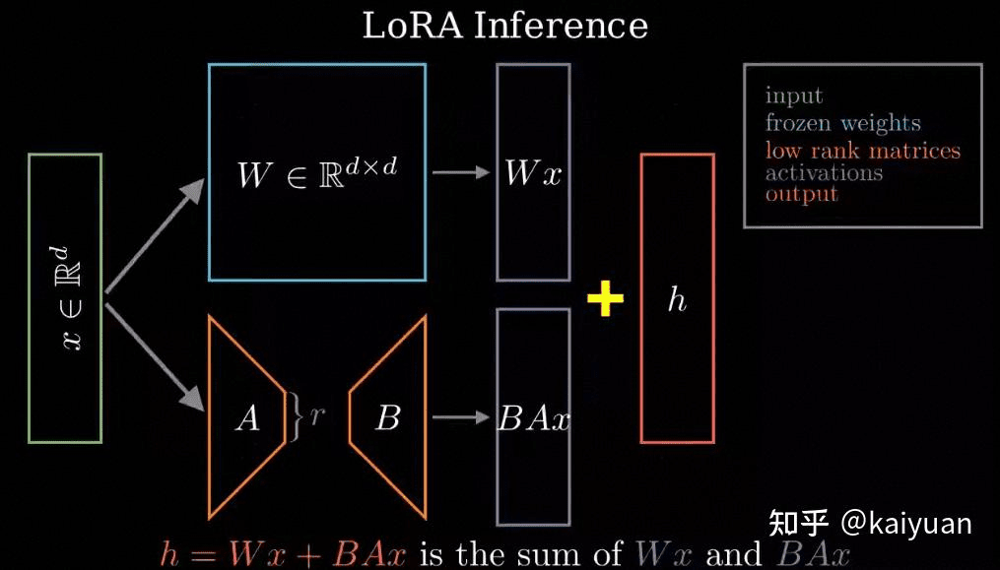
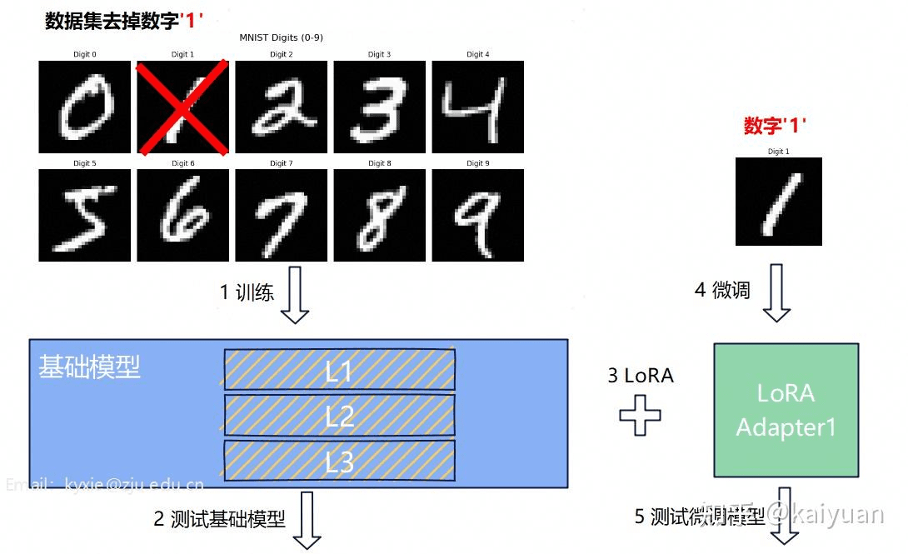
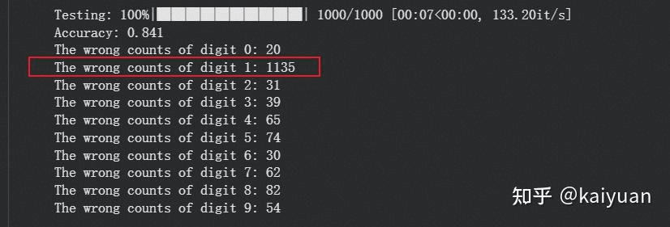
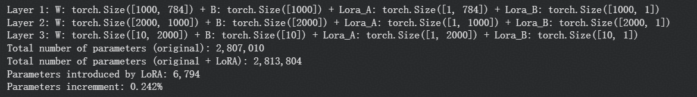
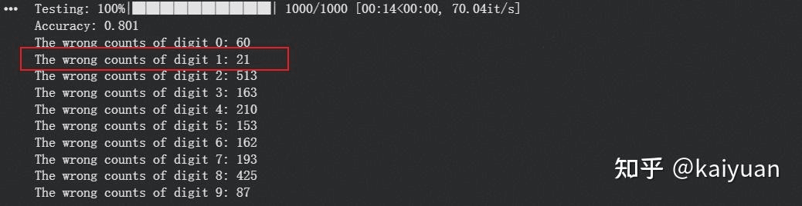
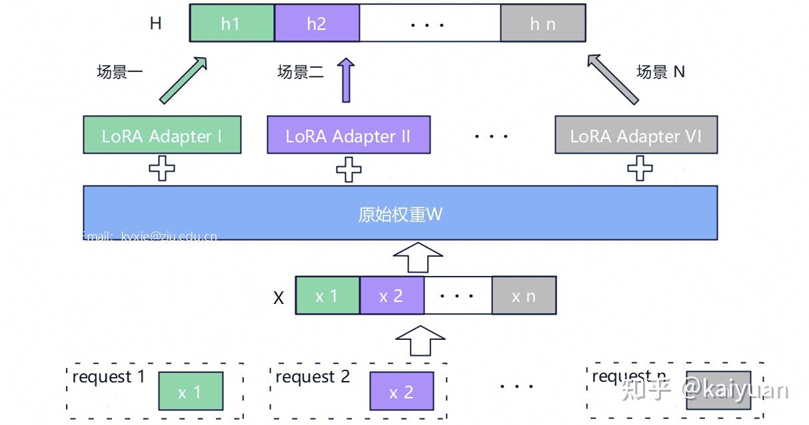

LoRA 和 Multi-LoRA
背景介绍
大模型预训练之后，各个任务进行微调。但是：大模型实在太大了，调参成本太高了。因此有许多方法：
- 适配器：一种在模型中插入新层的方式，仅训练插入的适配器；
- 前缀调优：给 Attention KV 层中添加一个前缀，并只训练这个附加的前缀参数。类似的方式还有提示词调优；
- 局部训练：仅训练 Transformer 的 LayerNorm 参数，或者仅训练 Bias（BitFit）；
- 低秩适配：给模型增加降秩权重，且仅训练该新增的权重；
LoRA 就是上面最后一个低秩适配方法，所以它是用来解决微调的。
低秩分解
LoRA 涉及到关键知识：任意矩阵都能进行奇异值分解（SVD）；当矩阵是不满秩矩阵时，可以用低秩的分解矩阵来代替原矩阵。
其中，\(W \in R^{m\times r}\)，\(U \in R^{m\times r}\)，\(\Sigma \in R^{r\times r}\)，\(V \in R^{r\times r}\)，\(r\) 是矩阵的秩。
这个好处：当矩阵的尺寸（m, n）较大时，分解矩阵的特点是元素个数相比原矩阵更少，r 越小元素越少。比如当 r = 1，m = n = 1000 时，原矩阵元素个数为 1,000,000，分解矩阵元素总数为 2001，比值小于 0.5%。参数量少带来好处是：计算量少、存储量少。
LoRA 原理
LoRA 正是用低秩分解矩阵的特点来降低微调矩阵的元素个数，原矩阵为 \(W_0 \in R^{d \times k}\)，微调矩阵为 \(\Delta W \in R^{d \times k}\)，输出的定义：
其中 \(B = U\Sigma \in R^{d \times r}, A = V^* \in R^{r \times k}\) 是 \(\Delta W\) 的分解矩阵表达。
微调时 \(W_0\) 冻结（不参与训练）、仅微调分解矩阵 \(A\) 和 \(B\)，因为 \(r << min(d, k)\)，所以需要训练的参数相比直接训练原矩阵少很多。

LoRA 实践
下面这个例子非常好，同样来自最开始的参考文章：https://zhuanlan.zhihu.com/p/1984729458444363168
选取数字 0~9 手写体识别的训练场景，数据采用 MNIST。训练一个 3 层的 MLP，让其具备数字手写体识别的能力。为了体现 LoRA 的作用，需要对数据集进行处理，先全量训练，再增加 LoRA 微调。大致步骤如下：
- step1：构建主模型并训练，训练数据集去掉数字「1」；
- step2：创建 LoRA 层；
- step3：主模型的参数冻结，用数字「1」的数据进行微调，测试结果；

构建简单的模型
首先第一步，构建简单模型，然后定义训练和测试，这都是最最基础的代码：
# 创建一个全连接的网络用于手写体识别：
class MLP(nn.Module):
def __init__(self, hidden_size_1=1000, hidden_size_2=2000):
super(MLP, self).__init__()
self.linear1 = nn.Linear(28*28, hidden_size_1)
self.linear2 = nn.Linear(hidden_size_1, hidden_size_2)
self.linear3 = nn.Linear(hidden_size_2, 10)
self.relu = nn.ReLU()
def forward(self, img):
x = img.view(-1, 28*28)
x = self.relu(self.linear1(x))
x = self.relu(self.linear2(x))
x = self.linear3(x)
return x
net = MLP().to(device)
然后去训练，关键点是：训练集去掉数字 1：
# 下载 MNIST 手写体数字识别的数据
transform = transforms.Compose([transforms.ToTensor(), transforms.Normalize((0.1307,), (0.3081,))])
# 加载手写体数据：
mnist_trainset = datasets.MNIST(root='./data', train=True, download=True, transform=transform) # 训练集
train_loader = torch.utils.data.DataLoader(mnist_trainset, batch_size=10, shuffle=True)
mnist_testset = datasets.MNIST(root='./data', train=False, download=True, transform=transform) # 测试集
# 去掉数字「1」的数据，模型对「1」的识别率存在问题
exclude_indices = torch.tensor([False if x == 1 else True for x in mnist_trainset.targets])
mnist_trainset.data = mnist_trainset.data[exclude_indices]
mnist_trainset.targets = mnist_trainset.targets[exclude_indices]
# 训练模型：
train(train_loader, net, epochs=1, total_iterations_limit=2000)
# 测试模型：
test_loader = torch.utils.data.DataLoader(mnist_testset, batch_size=10, shuffle=True)
test()
可以看到，去掉之后，对数字 1 的识别效果不好：

创建 LoRA 层
# 定义 LoRA 对权重修改：
class LoRAParametrization(nn.Module):
def __init__(self, features_in, features_out, rank=1, alpha=1, device='cpu'):
super().__init__()
# 低秩矩阵的定义：
self.lora_A = nn.Parameter(torch.zeros((rank, features_out)).to(device))
self.lora_B = nn.Parameter(torch.zeros((features_in, rank)).to(device))
nn.init.normal_(self.lora_A, mean=0, std=1)
# 参考论文：https://arxiv.org/pdf/2106.09685 4.1 节 设置一个比例系数：
self.scale = alpha / rank
# LoRA 开关：
self.enabled = True
def forward(self, original_weights):
if self.enabled:
# Return W + (B*A)*scale
return original_weights + torch.matmul(self.lora_B, self.lora_A).view(original_weights.shape) * self.scale
else:
return original_weights
将 LoRA 层注册到模型中：
def linear_layer_parameterization(layer, device, rank=1, lora_alpha=1):
# LoRA 仅修改 W，忽略 bias 修改。
features_in, features_out = layer.weight.shape
return LoRAParametrization(
features_in, features_out, rank=rank, alpha=lora_alpha, device=device
)
# 保存一份原始权重数据，用于后续校验
original_weights = {}
for name, param in net.named_parameters():
original_weights[name] = param.clone().detach()
# 注册 LoRA 权重到原始层中：
parametrize.register_parametrization(
net.linear1, "weight", linear_layer_parameterization(net.linear1, device)
)
parametrize.register_parametrization(
net.linear2, "weight", linear_layer_parameterization(net.linear2, device)
)
parametrize.register_parametrization(
net.linear3, "weight", linear_layer_parameterization(net.linear3, device)
)
# 定义 LoRA 开关函数：
def enable_disable_lora(enabled=True):
for layer in [net.linear1, net.linear2, net.linear3]:
layer.parametrizations["weight"][0].enabled = enabled
parametrize.register_parametrization 是什么
torch.nn.utils.parametrize.register_parametrization 是 PyTorch 提供的工具函数，用于给模型里的某个张量（如 weight/bias）“套上一层可微变换”，让你访问该张量时，自动返回变换后的结果，且支持反向传播与优化。
通俗讲：用一个可训练的变换函数，把原参数“包装”起来，不改变原参数名，但每次用它时都会走一遍你的定制变换。
假设你有一个线性层 linear，参数名为 weight：
# 原访问方式
w = linear.weight # 直接拿到原始参数
注册参数化后：
from torch.nn.utils.parametrize import register_parametrization
# 定义一个变换（必须是 nn.Module）
class MyParam(nn.Module):
def forward(self, X):
return X / X.norm() # 归一化
# 注册：给 linear.weight 绑定 MyParam 变换
register_parametrization(linear, "weight", MyParam())
此时访问：
w = linear.weight # 实际返回 MyParam(原始 weight)，即归一化后的权重
- 反向传播：梯度会自动流过
MyParam，优化器仍更新原始参数。 - 链式注册：同一张量可注册多个变换，按顺序串联执行。
打印原始参数和添加 LoRA 参数的对比，LoRA 占比仅 0.242%。

进行微调
然后我们就可以微调这个模型了，然后测试：
# 将原始权重冻结：
for name, param in net.named_parameters():
if 'lora' not in name:
print(f'Freezing non-LoRA parameter {name}')
param.requires_grad = False
# 过滤数据，仅保留「1」的数据：
mnist_trainset = datasets.MNIST(root='./data', train=True, download=True, transform=transform)
exclude_indices = torch.tensor([True if x == 1 else False for x in mnist_trainset.targets])
mnist_trainset.data = mnist_trainset.data[exclude_indices]
mnist_trainset.targets = mnist_trainset.targets[exclude_indices]
train_loader = torch.utils.data.DataLoader(mnist_trainset, batch_size=10, shuffle=True)
# 用数据「1」训练带有 LoRA 的模型：
train(train_loader, net, epochs=1, total_iterations_limit=100)
# 测试有 LoRA 的情况:
enable_disable_lora(enabled=True)
test()
结果显示微调后可以：

Multi-LoRA
如果是多业务场景下呢，LoRA 微调模型的部署该如何进行，是每个场景都部署一个 LoRA 适配器（adapter）加一个基础模型吗？这涉及多场景下 LoRA 的混合部署。
由于微调时不改变原模型权重，推理时仅在上面叠加一个适配器的权重值即可。所以，推理中产生了 Multi-LoRA 服务方案：不同场景的适配器共用一个基础模型。
